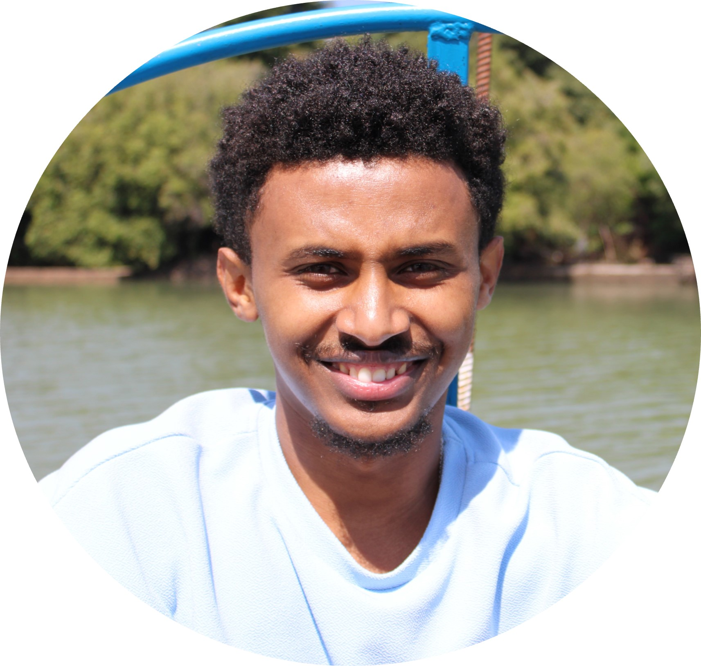

|
Fisseha A. Ferede
I am a PhD student at The University of Memphis where I am advised by Dr. Balasubramanian. My current research area lies at the intersection of computer vision and machine learning, particularly in optical flow estimation, video frame interpolation and future frame prediction, and video compression problems.
Previously, I was a research intern at BIESL, KAIST where I developed AI-enabled programmable and wearable devices for health monitoring applications. I was also a summer research intern at MST lab, TU Chemnitz where I designed and built 3D mechanical components and electrical system of a gesture controlled robotic arm.
I received my MS degree in Computer Engineering (Computer Vision focus) from University of Memphis and my BS degree in Electrical Engineering from KAIST.
Email /
Google Scholar /
Linkedin /
Github
|

|
Academic Services
- Journal Reviewer: Scientific Reports-Nature
- Teaching Assistant: Software Engineering, Signals and Systems at The University of Memphis
|
Honors and Awards
- First place in the Graduate Engineering category, Student Research Forum (SRF) competition, University of Memphis, USA, 2023.04.03
- Herff doctoral graduate fellowship, University of Memphis, USA, 2021.08.24
- German Academic Exchange Service (DAAD) research internship scholarship, TU Chemnitz, Germany, 2019.07.01
- Undergraduate Research Program (URP) research grant, KAIST, South Korea, 2018.11.24
- KAIST full scholarship to pursue undergraduate degree, KAIST, South Korea, 2015.08.24 - 2019.08.12
|
|
{kind=link}